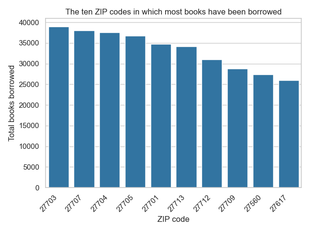

Basics of error measurement#
Note
This tutorial uses features that are only available on a paid version of Tumult Analytics. If you would like to hear more, please contact us at info@tmlt.io.
In previous tutorials, we saw how to write differentially private queries using the Tumult Analytics API. Differential privacy adds noise to data, and also involves truncation, so before going ahead with publishing or sharing DP statistics, we typically want to evaluate how accurate these statistics are, and carefully select the parameters used in our Tumult Analytics program.
That’s exactly what this tutorial series covers: measuring error and tuning parameters.
In this tutorial, we will walk you through the first step of the process of measuring and optimizing error: converting a simple program to have a fixed structure, and evaluating its error. Let’s get started!
Setup#
First, let’s import the Python packages we will use and download some sample data.
Throughout this tutorial section, we will use two tables: members contains information about the members of our fictional public library, and nc-zip-codes lists all the ZIP codes in North Carolina, where our library is located.
import matplotlib.pyplot as plt
import seaborn as sns
from pyspark import SparkFiles
from pyspark.sql import DataFrame, SparkSession
from tmlt.analytics.keyset import KeySet
from tmlt.analytics.privacy_budget import PureDPBudget
from tmlt.analytics.protected_change import AddOneRow
from tmlt.analytics.query_builder import QueryBuilder
from tmlt.analytics.session import Session
from tmlt.analytics.program import SessionProgram
from tmlt.analytics.tuner import SessionProgramTuner, Tunable
spark = SparkSession.builder.getOrCreate()
spark.sparkContext.addFile(
"https://tumult-public.s3.amazonaws.com/demos/library/v2/members.csv"
)
members_df = spark.read.csv(
SparkFiles.get("members.csv"), header=True, inferSchema=True
)
# ZIP code data is based on https://worldpopulationreview.com/zips/north-carolina
spark.sparkContext.addFile(
"https://tumult-public.s3.amazonaws.com/nc-zip-codes.csv"
)
nc_zip_codes_df = spark.read.csv(
SparkFiles.get("nc-zip-codes.csv"), header=True, inferSchema=True
)
nc_zip_codes_df = nc_zip_codes_df.withColumnRenamed("Zip Code", "zip_code")
nc_zip_codes_df = nc_zip_codes_df.withColumn("zip_code", nc_zip_codes_df.zip_code.cast('string'))
nc_zip_codes_df = nc_zip_codes_df.fillna(0)
nc_zip_codes_df = nc_zip_codes_df.select("zip_code")
A simple query#
Suppose we want to calculate how many books each user has borrowed from our library, broken down by ZIP code. We know how to do this, thanks to what we learned in previous tutorials. Below, we use two input Spark DataFrames: members_df, which contains a list of members of our fictional public library and information such as how many books each one borrowed, and nc_zip_codes_df, which contains a list of ZIP codes in North Carolina. The former needs to be protected, the second is public.
session = Session.from_dataframe(
source_id="members",
dataframe=members_df,
protected_change=AddOneRow(),
privacy_budget=PureDPBudget(epsilon=3),
)
zip_code_keys = KeySet.from_dataframe(nc_zip_codes_df.select("zip_code"))
query = (
QueryBuilder("members")
.groupby(zip_code_keys)
.sum("books_borrowed", low=0, high=500)
)
books_by_zip_code = session.evaluate(query, session.remaining_privacy_budget)
If we run this program, we get a DataFrame with noisy sums and we can use a visualization library to plot this into a nice map. Let’s consider only the top ten ZIP codes in which the most books have been borrowed and display the noisy sums as a graph.
import matplotlib.pyplot as plt
import seaborn as sns
sns.set_theme(style="whitegrid")
top_10_zipcodes = books_by_zip_code.orderBy(col("books_borrowed_sum").desc()).limit(10)
data_to_plot = top_10_zipcodes.toPandas()
g = sns.barplot(x="zip_code", y="books_borrowed_sum", data=data_to_plot, color="#1f77b4")
g.set_xticklabels(
data_to_plot["zip_code"], rotation=45, horizontalalignment="right"
)
plt.title("The ten ZIP codes in which most books have been borrowed")
plt.xlabel("ZIP code")
plt.ylabel("Total books borrowed")
plt.tight_layout()
plt.show()

However, it’s hard to know how trustworthy these results are. Let’s figure it out by computing the error of the above query. To get a sense of the “typical” error in these noisy statistics, we will compute the relative error for each zip code and then report the median value of those errors.
From Session to SessionProgram#
To get an error report, we must first convert our Session into a SessionProgram. In particular, we will create a subclass of SessionProgram, which defines both the structure of our Session and the logic for evaluating queries within the Session.
class BooksByZipCodeProgram(SessionProgram):
class ProtectedInputs:
members: DataFrame
class UnprotectedInputs:
nc_zip_codes: DataFrame
class Outputs:
books_by_zip_code: DataFrame
def session_interaction(self, session):
nc_zip_codes_df = session.public_source_dataframes["nc_zip_codes"]
nc_zip_code_keys = KeySet.from_dataframe(nc_zip_codes_df.select("zip_code"))
query = (
QueryBuilder("members")
.groupby(nc_zip_code_keys)
.sum("books_borrowed", low=0, high=500)
)
budget = session.remaining_privacy_budget
return {"books_by_zip_code": session.evaluate(query, budget)}
A subclass of SessionProgram has two main parts: an input/output specification, and a session_interaction() method. Let’s look at each component separately.
- First, we list our program’s inputs (distinguishing the protected ones from the non-protected ones) and outputs.
The
ProtectedInputsnested class contains one class variable for each input DataFrame that contain sensitive data (and therefore should be protected by differential privacy). All protected inputs must be DataFrames. In this case, the only protected input is themembersDataFrame.The
UnprotectedInputsnested class contains one class variable for each input DataFrame that contains public data (and does not require differential privacy). All unprotected inputs must be DataFrames. These DataFrame can be accessed directly by the program. In this case, the only unprotected input is the publicly availablenc_zip_codesDataFrame.The
Outputsnested class contains one class variable for each output DataFrame. All outputs must be DataFrames. In this case, we have only one output,books_by_zip_code, which will hold the results obtained by the program.
- Second, we write our program logic inside a
session_interaction()method, which is used to define the interaction between thisSessionProgramand aSession. This method: Uses a
Sessionto evaluate queries as we would in any other Tumult Analytics program. Unlike other Tumult Analytics programs, we don’t construct the Session directly - instead, the Session is provided to session_interaction as a method parameter.Returns a dictionary of output DataFrames keyed by their names (which must correspond to the names in the
Outputs).
- Second, we write our program logic inside a
Initializing and running a SessionProgram#
Let’s initialize our BooksByZipCodeProgram using its Builder (which is inherited from SessionProgram). The Builder interface is very similar to Session.Builder. We use builder methods to pass in the protected and unprotected dataframes, and the privacy budget we want to enforce.
zip_code_program = (
BooksByZipCodeProgram.Builder()
.with_private_dataframe(
source_id="members",
dataframe=members_df,
protected_change=AddOneRow()
)
.with_public_dataframe(
source_id="nc_zip_codes",
dataframe=nc_zip_codes_df,
)
.with_privacy_budget(PureDPBudget(3))
.build()
)
Once initialized, instead of calling queries on it like the Session, we run the whole program at once using the run() method, and obtain the outputs with outputs.
Note
The only way that a SessionProgram can access its input data is through the Session provided as a parameter in the session_interaction() method. Its privacy guarantee is exactly the same as a Session’s - the data is protected with the privacy loss budget we specify when instantiating the program (using the same syntax as the Session).
zip_code_program.run()
zip_code_program.outputs["books_by_zip_code"].show(10)
+--------+------------------+
|zip_code|books_borrowed_sum|
+--------+------------------+
| 27006| 359|
| 27007| -218|
| 27009| 477|
| 27011| -145|
| 27012| 424|
| 27013| 8|
| 27014| -302|
| 27016| 278|
| 27017| -322|
| 27018| 274|
+--------+------------------+
only showing top 10 rows
One characteristic of a SessionProgram is that it can only be run once: running it again is forbidden.
>>> zip_code_program.run()
Traceback (most recent call last):
...
RuntimeError: The SessionProgram has already been run. It can only be run once.
First look at error#
Now that we have clearly defined our program, and specified its inputs, outputs, and query logic, we can use a SessionProgramTuner to measure its error.
In particular, we will write a subclass of SessionProgramTuner, and pass our BooksByZipCodeProgram as a class argument.
We will also specify a set of error metrics in the metrics class variable to measure how accurate our output is.
For example, we will use the built-in metric MedianRelativeError to measure the program’s median relative error.
from tmlt.analytics.metrics import MedianRelativeError
class BooksTuner(SessionProgramTuner, program=BooksByZipCodeProgram):
metrics = [
MedianRelativeError(
output="books_by_zip_code",
measure_column="books_borrowed_sum",
join_columns=["zip_code"]
),
]
- The
MedianRelativeErrormetric requires three parameters: output: the name of the output DataFrame whose error we want to measure. In this case, it is our only output table:books_by_zip_code.measure_column: the column in the output DataFrame whose error we want to measure. In this case, it is the sum column from our query,books_borrowed_sum.join_columns: the columns that can be used to uniquely identify an output row. In this case, it is thezip_codecolumn because we have one output row per zip code.
- The
measure_columnandjoin_columnsparameters are used behind the scenes to measure error: First, we automatically generate the baseline output - a DataFrame containing the “true” (non-noisy) query results.
Then, we join the noisy answers to the baseline on the
join_columns.Finally, we calculate the relative error for each row between the
measure_columnin the noisy and baseline DataFrames, and return the median.
Our BooksTuner can be initialized just like a Session, but it does not provide any privacy guarantees: error information is not differentially private! This is true even though we provide a budget to the tuner - the budget is used to calculate the DP dataset, but we then compare the DP answers to the true, un-noised answers. For this reason, it is a good practice to use different datasets for tuning and deployment — historical datasets or synthetic datasets are common choices.
simple_tuner = (
BooksTuner.Builder()
.with_private_dataframe(
source_id="members",
dataframe=members_df,
protected_change=AddOneRow()
)
.with_public_dataframe(
source_id="nc_zip_codes",
dataframe=nc_zip_codes_df,
)
.with_privacy_budget(PureDPBudget(3))
.build()
)
Now that our BooksTuner is initialized, we can get our very first error report by calling the error_report() method.
error_report = simple_tuner.error_report()
error_report.show()
Error report ran with budget PureDPBudget(epsilon=3) and no tunable parameters and no additional parameters
Metric results:
+---------+----------+------------+--------------------------------------------------------------------------------+
| Value | Metric | Baseline | Description |
+=========+==========+============+================================================================================+
| 0.199 | mre | default | Median relative error for column books_borrowed_sum of table books_by_zip_code |
+---------+----------+------------+--------------------------------------------------------------------------------+
We computed our first error metric!
You probably have lots of questions, like “how do I choose which metrics to use to quantify error”, or “how do I measure error with many parameters at once”, or “how do I determine what baseline is used behind the scenes to measure error”. Great news — that’s exactly the topic of the next tutorials in this series.